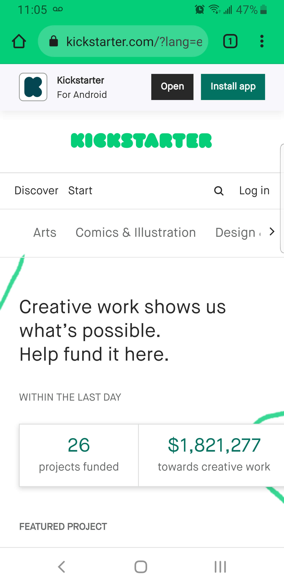
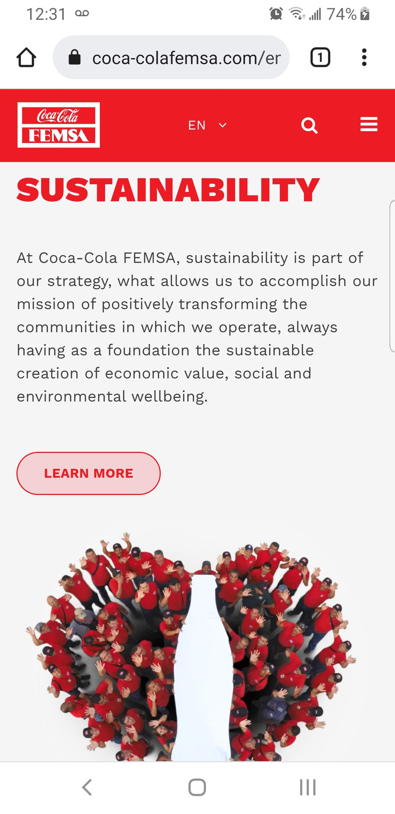

Fitt's Law
Kickstarter
The law establishes the way in which we interact with the distance of the objects on our screen,
in this case we can see that the login button is located in the upper middle part,
this being an accessible place for the movement of the fingers hand. On the screen, we can also see how it has shortcuts to keywords that we may be interested in seeing on the web page and start browsing.
Space and Clean Design
Coca-Cola
White space (also called “negative space”) is the portion of a web page that remains “empty.”
It’s the space between graphics, margins, gutters,
space between columns, space between lines of type, or visuals.
In this case, the web page plays a good role in showing two different colors red and white, the white color is in the background and for that reason,
it's easy to position the elements on the Web-page
Contrast
Bliss
Through contrast designers are able to highlight certain elements they want to emphasize, creating a focal point for an audience and a visual hierarchy.
We can see the colors, in contrast, looks very nice